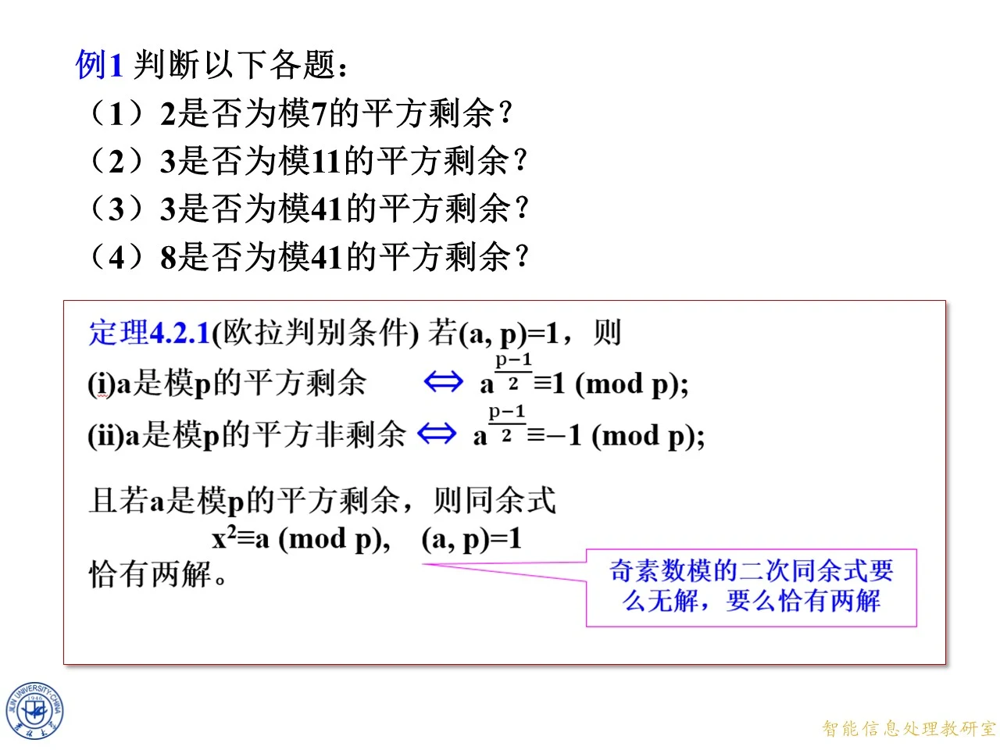

4.2.1 奇素数模p的平方（非）剩余判别条件
◆ p.74-75 ｜4.2 节首页与本节任务
p.74 是本节的目录式首页，列出两个小节：4.2.1 平方（非）剩余判别条件、4.2.2 平方（非）剩余的个数，属过渡帧，与 p.75 合并来讲。p.75 给出本节讨论对象：模为奇素数 p 的二次同余式 x 2 ≡ a ( m o d p ) x^2\equiv a\pmod p x 2 ≡ a ( mod p ) ( a , p ) = 1 (a,p)=1 ( a , p ) = 1 a ≢ 0 ( m o d p ) a\not\equiv0\pmod p a ≡ 0 ( mod p ) p ∤ a p\nmid a p ∤ a x 2 ≡ 0 ( m o d p ) x^2\equiv0\pmod p x 2 ≡ 0 ( mod p ) x ≡ 0 ( m o d p ) x\equiv0\pmod p x ≡ 0 ( mod p )
◆ p.76-82 ｜思考（1）：解的个数估计
课件第一条思考：根据素数模同余式解数估计定理（定理 3.4.4），此二次同余式最多有几个解？动画先留下一个红色问号，下一页给出答案"最多有两个解"——左边多项式 x 2 − a x^2-a x 2 − a x 0 x_0 x 0 ( − x 0 ) 2 ≡ x 0 2 ≡ a ( m o d p ) (-x_0)^2\equiv x_0^2\equiv a\pmod p ( − x 0 ) 2 ≡ x 0 2 ≡ a ( mod p ) − x 0 -x_0 − x 0 x 0 ≢ − x 0 ( m o d p ) x_0\not\equiv -x_0\pmod p x 0 ≡ − x 0 ( mod p ) 2 x 0 ≡ 0 ( m o d p ) 2x_0\equiv0\pmod p 2 x 0 ≡ 0 ( mod p ) p ∣ x 0 p\mid x_0 p ∣ x 0 p ∣ x 0 2 ≡ a p\mid x_0^2\equiv a p ∣ x 0 2 ≡ a ( a , p ) = 1 (a,p)=1 ( a , p ) = 1 拓展 （课件外补充）：这个"正负配对"事实后面数个数时还要用：每个非零平方剩余都对应两个不同的根。课件此处只删掉了"1"而没有写明理由，上面把缺的一步补全。它也正是页面批注"奇素数模的二次同余式要么无解，要么恰有两解"的由来。
◆ p.83-85 ｜思考（2）：x 2 ≡ 1 ( m o d p ) x^2\equiv1\pmod p x 2 ≡ 1 ( mod p ) x 2 ≡ 1 ( m o d p ) x^2\equiv1\pmod p x 2 ≡ 1 ( mod p ) x ≡ ± 1 ( m o d p ) x\equiv\pm1\pmod p x ≡ ± 1 ( mod p ) x ≡ ± 1 ( m o d p ) x\equiv\pm1\pmod p x ≡ ± 1 ( mod p ) 拓展 （课件外补充）：也可以走因式分解路线：x 2 − 1 = ( x − 1 ) ( x + 1 ) x^2-1=(x-1)(x+1) x 2 − 1 = ( x − 1 ) ( x + 1 ) x ≡ ± 1 ( m o d p ) x\equiv\pm1\pmod p x ≡ ± 1 ( mod p ) 8 8 8 x 2 ≡ 1 ( m o d 8 ) x^2\equiv1\pmod 8 x 2 ≡ 1 ( mod 8 ) 1 , 3 , 5 , 7 1,3,5,7 1 , 3 , 5 , 7 a p − 1 2 a^{\frac{p-1}{2}} a 2 p − 1
◆ p.86-94 ｜思考（3）（4）：必要方向的推导
第三条思考：根据欧拉定理，a p − 1 = a φ ( p ) ≡ 1 ( m o d p ) a^{p-1}=a^{\varphi(p)}\equiv1\pmod p a p − 1 = a φ ( p ) ≡ 1 ( mod p ) a p − 1 2 ≡ ± 1 ( m o d p ) a^{\frac{p-1}{2}}\equiv\pm1\pmod p a 2 p − 1 ≡ ± 1 ( mod p ) z = a p − 1 2 z=a^{\frac{p-1}{2}} z = a 2 p − 1 z 2 = a p − 1 ≡ 1 ( m o d p ) z^2=a^{p-1}\equiv1\pmod p z 2 = a p − 1 ≡ 1 ( mod p ) z ≡ ± 1 ( m o d p ) z\equiv\pm1\pmod p z ≡ ± 1 ( mod p ) x 2 ≡ a ( m o d p ) x^2\equiv a\pmod p x 2 ≡ a ( mod p ) b 2 ≡ a b^2\equiv a b 2 ≡ a ( a , p ) = 1 (a,p)=1 ( a , p ) = 1 ( b , p ) = 1 (b,p)=1 ( b , p ) = 1 b 2 ≡ a b^2\equiv a b 2 ≡ a b φ ( p ) ≡ 1 ( m o d p ) b^{\varphi(p)}\equiv1\pmod p b φ ( p ) ≡ 1 ( mod p ) a p − 1 2 = ( b 2 ) p − 1 2 = b p − 1 = b φ ( p ) ≡ 1 ( m o d p ) a^{\frac{p-1}{2}}=(b^2)^{\frac{p-1}{2}}=b^{p-1}=b^{\varphi(p)}\equiv1\pmod p a 2 p − 1 = ( b 2 ) 2 p − 1 = b p − 1 = b φ ( p ) ≡ 1 ( mod p ) p − 1 2 \frac{p-1}{2} 2 p − 1 φ ( p ) = p − 1 \varphi(p)=p-1 φ ( p ) = p − 1
◆ p.95-100 ｜思考（4）聚焦：链条与反向问题
接下来几页把思考 (4) 单独放大成焦点页：左侧写 x 2 ≡ a ( m o d p ) x^2\equiv a\pmod p x 2 ≡ a ( mod p ) a p − 1 2 ≡ 1 ( m o d p ) a^{\frac{p-1}{2}}\equiv1\pmod p a 2 p − 1 ≡ 1 ( mod p ) ( a , p ) = 1 (a,p)=1 ( a , p ) = 1 b 2 ≡ a b^2\equiv a b 2 ≡ a ( b , p ) = 1 (b,p)=1 ( b , p ) = 1 a p − 1 2 = ( b 2 ) p − 1 2 = b φ ( p ) ≡ 1 ( m o d p ) a^{\frac{p-1}{2}}=(b^2)^{\frac{p-1}{2}}=b^{\varphi(p)}\equiv1\pmod p a 2 p − 1 = ( b 2 ) 2 p − 1 = b φ ( p ) ≡ 1 ( mod p ) a p − 1 2 − 1 ≡ 0 ( m o d p ) a^{\frac{p-1}{2}}-1\equiv0\pmod p a 2 p − 1 − 1 ≡ 0 ( mod p ) x 2 − a ≡ 0 ( m o d p ) x^2-a\equiv0\pmod p x 2 − a ≡ 0 ( mod p ) x 2 − a x^2-a x 2 − a x p − x x^p-x x p − x
◆ p.101-108 ｜证明：用定理 3.4.5 求余式
证明页照课件写（p.101 到 p.108 为同一证明的逐帧动画，绿色高亮逐步移动）。证：因 p 是奇素数（p>2），所以可以利用定理 3.4.5，先求 x p − x x^p-x x p − x x 2 − a x^2-a x 2 − a x p − x = ( x p − a p − 1 2 x ) + ( a p − 1 2 x − x ) x^p-x=\left(x^p-a^{\frac{p-1}{2}}x\right)+\left(a^{\frac{p-1}{2}}x-x\right) x p − x = ( x p − a 2 p − 1 x ) + ( a 2 p − 1 x − x ) x 2 = a x^2=a x 2 = a = x ( x p − 1 − a p − 1 2 ) + ( a p − 1 2 − 1 ) x = x ( ( x 2 ) p − 1 2 − a p − 1 2 ) + ( a p − 1 2 − 1 ) x =x\left(x^{p-1}-a^{\frac{p-1}{2}}\right)+\left(a^{\frac{p-1}{2}}-1\right)x=x\left(\left(x^2\right)^{\frac{p-1}{2}}-a^{\frac{p-1}{2}}\right)+\left(a^{\frac{p-1}{2}}-1\right)x = x ( x p − 1 − a 2 p − 1 ) + ( a 2 p − 1 − 1 ) x = x ( ( x 2 ) 2 p − 1 − a 2 p − 1 ) + ( a 2 p − 1 − 1 ) x u k − v k = ( u − v ) ( u k − 1 + u k − 2 v + ⋯ + v k − 1 ) u^k-v^k=(u-v)\left(u^{k-1}+u^{k-2}v+\cdots+v^{k-1}\right) u k − v k = ( u − v ) ( u k − 1 + u k − 2 v + ⋯ + v k − 1 ) u = x 2 u=x^2 u = x 2 v = a v=a v = a k = p − 1 2 k=\frac{p-1}{2} k = 2 p − 1 ( x 2 − a ) (x^2-a) ( x 2 − a ) = x q ( x ) ( x 2 − a ) + ( a p − 1 2 − 1 ) x =x\,q(x)(x^2-a)+\left(a^{\frac{p-1}{2}}-1\right)x = x q ( x ) ( x 2 − a ) + ( a 2 p − 1 − 1 ) x a p − 1 2 − 1 ≡ 0 ( m o d p ) a^{\frac{p-1}{2}}-1\equiv0\pmod p a 2 p − 1 − 1 ≡ 0 ( mod p ) x p − x ≡ x q ( x ) ( x 2 − a ) ( m o d p ) x^p-x\equiv x\,q(x)(x^2-a)\pmod p x p − x ≡ x q ( x ) ( x 2 − a ) ( mod p ) x 2 − a x^2-a x 2 − a x p − x x^p-x x p − x x 2 − a ≡ 0 ( m o d p ) x^2-a\equiv0\pmod p x 2 − a ≡ 0 ( mod p ) 拓展 （课件外补充）：此处对定理 3.4.5 的用法是"首一多项式整除 x p − x x^p-x x p − x x p − x = x ( x − 1 ) ( x − 2 ) ⋯ ( x − ( p − 1 ) ) x^p-x=x(x-1)(x-2)\cdots(x-(p-1)) x p − x = x ( x − 1 ) ( x − 2 ) ⋯ ( x − ( p − 1 )) x 7 − x x^7-x x 7 − x x 2 − 2 x^2-2 x 2 − 2 5 x 5x 5 x
◆ p.109-113 ｜总结：双向判别与无解情形
总结页把两条结论并排：(4) x 2 ≡ a ( m o d p ) x^2\equiv a\pmod p x 2 ≡ a ( mod p ) ⟺ \iff ⟺ a p − 1 2 ≡ 1 ( m o d p ) a^{\frac{p-1}{2}}\equiv1\pmod p a 2 p − 1 ≡ 1 ( mod p ) x 2 ≡ a ( m o d p ) x^2\equiv a\pmod p x 2 ≡ a ( mod p ) ± 1 \pm1 ± 1 a p − 1 2 ≡ − 1 ( m o d p ) a^{\frac{p-1}{2}}\equiv-1\pmod p a 2 p − 1 ≡ − 1 ( mod p )
◆ p.114 ｜定理 4.2.1（欧拉判别条件）
课件把上述思考固化为定理。定理 4.2.1（欧拉判别条件）若 ( a , p ) = 1 (a,p)=1 ( a , p ) = 1 ⟺ \iff ⟺ a p − 1 2 ≡ 1 ( m o d p ) a^{\frac{p-1}{2}}\equiv1\pmod p a 2 p − 1 ≡ 1 ( mod p ) ⟺ \iff ⟺ a p − 1 2 ≡ − 1 ( m o d p ) a^{\frac{p-1}{2}}\equiv-1\pmod p a 2 p − 1 ≡ − 1 ( mod p ) x 2 ≡ a ( m o d p ) x^2\equiv a\pmod p x 2 ≡ a ( mod p ) ( a , p ) = 1 (a,p)=1 ( a , p ) = 1 拓展 （课件外补充）：定理右侧的幂 a p − 1 2 a^{\frac{p-1}{2}} a 2 p − 1 ( a p ) \left(\frac{a}{p}\right) ( p a ) x p − x x^p-x x p − x
◆ p.115-116 ｜例 1：四次判别
例 1 判断以下各题：（1）2 是否为模 7 的平方剩余？（2）3 是否为模 11 的平方剩余？（3）3 是否为模 41 的平方剩余？（4）8 是否为模 41 的平方剩余？
解：按定理 4.2.1，只需计算 a p − 1 2 m o d p a^{\frac{p-1}{2}}\bmod p a 2 p − 1 mod p 2 7 − 1 2 = 2 3 = 8 ≡ 1 ( m o d 7 ) 2^{\frac{7-1}{2}}=2^3=8\equiv1\pmod7 2 2 7 − 1 = 2 3 = 8 ≡ 1 ( mod 7 ) 3 2 = 9 ≡ 2 ( m o d 7 ) 3^2=9\equiv2\pmod7 3 2 = 9 ≡ 2 ( mod 7 ) 3 11 − 1 2 = 3 5 = 243 = 11 × 22 + 1 ≡ 1 ( m o d 11 ) 3^{\frac{11-1}{2}}=3^5=243=11\times22+1\equiv1\pmod{11} 3 2 11 − 1 = 3 5 = 243 = 11 × 22 + 1 ≡ 1 ( mod 11 ) 5 2 = 25 ≡ 3 ( m o d 11 ) 5^2=25\equiv3\pmod{11} 5 2 = 25 ≡ 3 ( mod 11 ) 3 41 − 1 2 = 3 20 ≡ ( 3 4 ) 5 ≡ ( 40 ) 5 ≡ − 1 ( m o d 41 ) 3^{\frac{41-1}{2}}=3^{20}\equiv(3^4)^5\equiv(40)^5\equiv-1\pmod{41} 3 2 41 − 1 = 3 20 ≡ ( 3 4 ) 5 ≡ ( 40 ) 5 ≡ − 1 ( mod 41 ) 3 4 = 81 ≡ − 1 ( m o d 41 ) 3^4=81\equiv-1\pmod{41} 3 4 = 81 ≡ − 1 ( mod 41 ) 8 41 − 1 2 ≡ 8 20 ≡ 2 60 ≡ 2 20 ≡ ( 1024 ) 2 ≡ ( − 1 ) 2 ≡ 1 ( m o d 41 ) 8^{\frac{41-1}{2}}\equiv8^{20}\equiv2^{60}\equiv2^{20}\equiv(1024)^2\equiv(-1)^2\equiv1\pmod{41} 8 2 41 − 1 ≡ 8 20 ≡ 2 60 ≡ 2 20 ≡ ( 1024 ) 2 ≡ ( − 1 ) 2 ≡ 1 ( mod 41 ) 8 20 = ( 2 3 ) 20 = 2 60 8^{20}=(2^3)^{20}=2^{60} 8 20 = ( 2 3 ) 20 = 2 60 2 40 ≡ 1 ( m o d 41 ) 2^{40}\equiv1\pmod{41} 2 40 ≡ 1 ( mod 41 ) 2 60 = 2 40 ⋅ 2 20 ≡ 2 20 2^{60}=2^{40}\cdot2^{20}\equiv2^{20} 2 60 = 2 40 ⋅ 2 20 ≡ 2 20 2 10 = 1024 = 41 × 24 + 40 ≡ − 1 ( m o d 41 ) 2^{10}=1024=41\times24+40\equiv-1\pmod{41} 2 10 = 1024 = 41 × 24 + 40 ≡ − 1 ( mod 41 ) 2 20 ≡ ( − 1 ) 2 = 1 2^{20}\equiv(-1)^2=1 2 20 ≡ ( − 1 ) 2 = 1 7 2 = 49 ≡ 8 ( m o d 41 ) 7^2=49\equiv8\pmod{41} 7 2 = 49 ≡ 8 ( mod 41 ) 2 60 2^{60} 2 60 2 20 2^{20} 2 20 2 40 ≡ 1 ( m o d 41 ) 2^{40}\equiv1\pmod{41} 2 40 ≡ 1 ( mod 41 ) 2 60 = 2 40 ⋅ 2 20 2^{60}=2^{40}\cdot2^{20} 2 60 = 2 40 ⋅ 2 20 3 4 ≡ − 1 3^4\equiv-1 3 4 ≡ − 1 3 4 ≡ 40 3^4\equiv40 3 4 ≡ 40 ( 40 ) 5 ≡ ( − 1 ) 5 ≡ − 1 (40)^5\equiv(-1)^5\equiv-1 ( 40 ) 5 ≡ ( − 1 ) 5 ≡ − 1
◆ p.117-119 ｜例 2：乘积的判别
例 2 设 p 是奇素数，( a 1 , p ) = 1 (a_1,p)=1 ( a 1 , p ) = 1 ( a 2 , p ) = 1 (a_2,p)=1 ( a 2 , p ) = 1 a 1 a_1 a 1 a 2 a_2 a 2 a 1 a 2 a_1a_2 a 1 a 2 a 1 a_1 a 1 a 2 a_2 a 2 a 1 a 2 a_1a_2 a 1 a 2 a 1 a_1 a 1 a 2 a_2 a 2 a 1 a 2 a_1a_2 a 1 a 2 ( a 1 a 2 ) p − 1 2 = a 1 p − 1 2 a 2 p − 1 2 ≡ ? ( m o d p ) (a_1a_2)^{\frac{p-1}{2}}=a_1^{\frac{p-1}{2}}a_2^{\frac{p-1}{2}}\equiv ?\pmod p ( a 1 a 2 ) 2 p − 1 = a 1 2 p − 1 a 2 2 p − 1 ≡ ? ( mod p ) 1 × 1 = 1 1\times1=1 1 × 1 = 1 ( − 1 ) × ( − 1 ) = 1 (-1)\times(-1)=1 ( − 1 ) × ( − 1 ) = 1 1 × ( − 1 ) = − 1 1\times(-1)=-1 1 × ( − 1 ) = − 1
◆ p.120 ｜推论
课件把例 2 固化为定理 4.2.1 的推论。推论 设 p 是奇素数，( a 1 , p ) = 1 (a_1,p)=1 ( a 1 , p ) = 1 ( a 2 , p ) = 1 (a_2,p)=1 ( a 2 , p ) = 1 a 1 a_1 a 1 a 2 a_2 a 2 a 1 a 2 a_1a_2 a 1 a 2 a 1 a_1 a 1 a 2 a_2 a 2 a 1 a 2 a_1a_2 a 1 a 2 a 1 a_1 a 1 a 2 a_2 a 2 a 1 a 2 a_1a_2 a 1 a 2 拓展 （课件外补充）：推论说明模 p 的非零平方剩余对乘法封闭，非零剩余类在乘法下成群；用勒让得符号写就是 ( a 1 a 2 p ) = ( a 1 p ) ( a 2 p ) \left(\frac{a_1a_2}{p}\right)=\left(\frac{a_1}{p}\right)\left(\frac{a_2}{p}\right) ( p a 1 a 2 ) = ( p a 1 ) ( p a 2 ) 2 × 4 ≡ 1 ( m o d 7 ) 2\times4\equiv1\pmod7 2 × 4 ≡ 1 ( mod 7 ) 3 × 5 ≡ 1 ( m o d 7 ) 3\times5\equiv1\pmod7 3 × 5 ≡ 1 ( mod 7 ) 2 × 3 ≡ 6 ( m o d 7 ) 2\times3\equiv6\pmod7 2 × 3 ≡ 6 ( mod 7 )
◆ p.121 ｜思考：小模列举（题目）
连续四条小模思考，训练快速列举：（1）在整数 1、2 中，哪些是模 3 平方剩余？哪些是模 3 平方非剩余？（2）在整数 1、2、3、4 中，哪些是模 5 平方剩余？哪些是模 5 平方非剩余？（3）在整数 1、2、3、4、5、6 中，哪些是模 7 平方剩余？哪些是模 7 平方非剩余？（4）在整数 1 ∼ 10 1\sim10 1 ∼ 10
◆ p.122-123 ｜思考：模 3 与模 5
模 3：课件只列 1 2 ≡ 1 1^2\equiv1 1 2 ≡ 1 2 2 ≡ 1 ( m o d 3 ) 2^2\equiv1\pmod3 2 2 ≡ 1 ( mod 3 ) 3 − 1 2 = 1 \frac{3-1}{2}=1 2 3 − 1 = 1 1 2 ≡ 1 1^2\equiv1 1 2 ≡ 1 2 2 ≡ 4 2^2\equiv4 2 2 ≡ 4 3 2 ≡ 4 3^2\equiv4 3 2 ≡ 4 4 2 ≡ 1 ( m o d 5 ) 4^2\equiv1\pmod5 4 2 ≡ 1 ( mod 5 ) 2 2 2^2 2 2 3 2 3^2 3 2 1 2 1^2 1 2 4 2 4^2 4 2 ( p − k ) 2 ≡ k 2 ( m o d p ) (p-k)^2\equiv k^2\pmod p ( p − k ) 2 ≡ k 2 ( mod p ) p − 1 2 \frac{p-1}{2} 2 p − 1
◆ p.124-126 ｜思考：模 7 与模 11
模 7：1 2 ≡ 1 1^2\equiv1 1 2 ≡ 1 2 2 ≡ 4 2^2\equiv4 2 2 ≡ 4 3 2 ≡ 2 3^2\equiv2 3 2 ≡ 2 4 2 ≡ 2 4^2\equiv2 4 2 ≡ 2 5 2 ≡ 4 5^2\equiv4 5 2 ≡ 4 6 2 ≡ 1 ( m o d 7 ) 6^2\equiv1\pmod7 6 2 ≡ 1 ( mod 7 ) 1 2 ≡ 1 1^2\equiv1 1 2 ≡ 1 2 2 ≡ 4 2^2\equiv4 2 2 ≡ 4 3 2 ≡ 9 3^2\equiv9 3 2 ≡ 9 4 2 ≡ 5 4^2\equiv5 4 2 ≡ 5 5 2 ≡ 3 5^2\equiv3 5 2 ≡ 3 10 2 ≡ 1 10^2\equiv1 1 0 2 ≡ 1 9 2 ≡ 4 9^2\equiv4 9 2 ≡ 4 8 2 ≡ 9 8^2\equiv9 8 2 ≡ 9 7 2 ≡ 5 7^2\equiv5 7 2 ≡ 5 6 2 ≡ 3 ( m o d 11 ) 6^2\equiv3\pmod{11} 6 2 ≡ 3 ( mod 11 ) 拓展 （课件外补充）：这四张小表可用推论自检：模 7 中剩×剩 2 × 4 ≡ 1 ( m o d 7 ) 2\times4\equiv1\pmod7 2 × 4 ≡ 1 ( mod 7 ) 3 × 5 ≡ 1 ( m o d 7 ) 3\times5\equiv1\pmod7 3 × 5 ≡ 1 ( mod 7 ) 2 × 3 ≡ 6 ( m o d 7 ) 2\times3\equiv6\pmod7 2 × 3 ≡ 6 ( mod 7 ) 3 × 4 ≡ 1 ( m o d 11 ) 3\times4\equiv1\pmod{11} 3 × 4 ≡ 1 ( mod 11 ) 2 × 6 ≡ 1 ( m o d 11 ) 2\times6\equiv1\pmod{11} 2 × 6 ≡ 1 ( mod 11 ) 3 × 2 ≡ 6 ( m o d 11 ) 3\times2\equiv6\pmod{11} 3 × 2 ≡ 6 ( mod 11 ) p − 1 2 \frac{p-1}{2} 2 p − 1

课件原图 · 10月12日授课 · 第 115 页 查看前后已收录原页 →